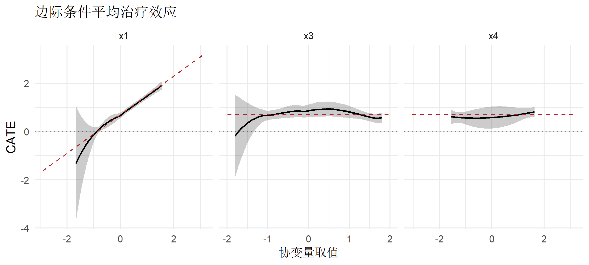
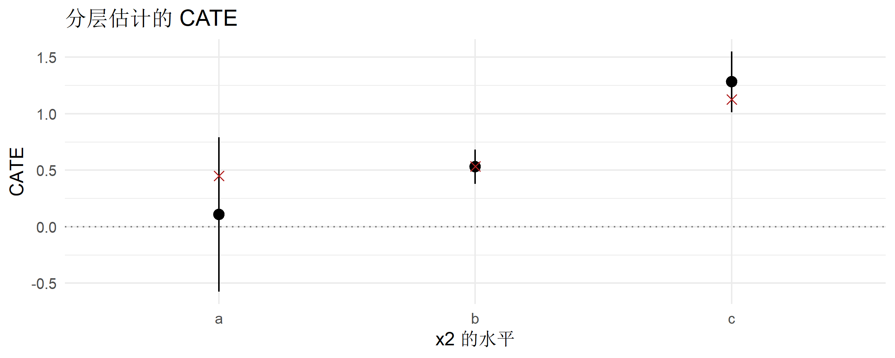
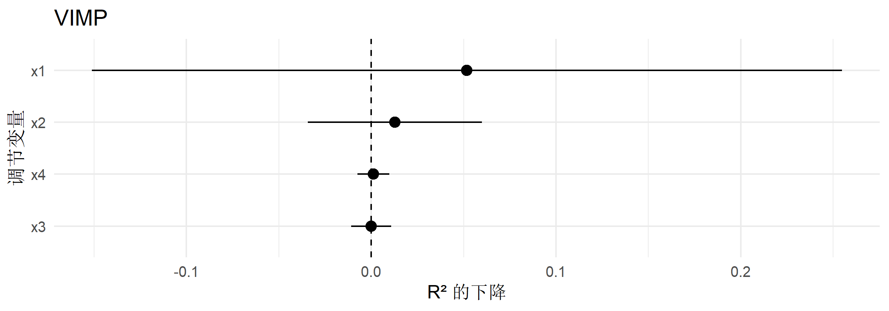
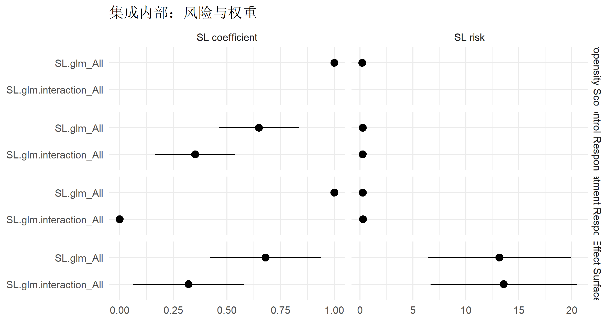
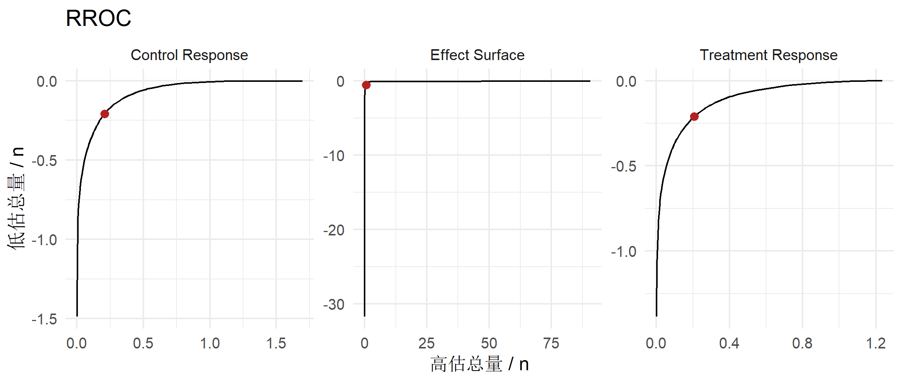
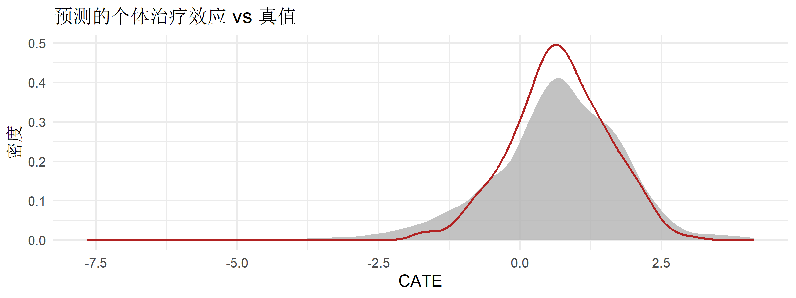

d <- tibble(y = rbinom(200, 1, 0.4), p = runif(200), w = rexp(200), u = 1:200)
attr(d, "weights") <- "w"
attr(d, "identifier") <- "u"
estimate_diagnostic(d, "y", "p", "AUC")
#> # A tibble: 1 × 4
#> estimand term estimate std_error
#> <chr> <chr> <dbl> <dbl>
#> 1 AUC y 0.566 0.0565
estimate_diagnostic(d, "y", "p", "MSE")
#> # A tibble: 1 × 4
#> estimand term estimate std_error
#> <chr> <chr> <dbl> <dbl>
#> 1 MSE y 0.311 0.03527. 诊断与可视化
tidyhte 包函数手册
tidyhte 不产出任何图形对象：它只返回一张长格式 tibble， 画图完全交给使用者。这一页先讲诊断怎么配、算的是什么， 再给五张可以直接照抄的 ggplot2 模板。
Diagnostics_cfg
Diagnostics_cfg$new(ps = NULL, outcome = NULL, effect = NULL, params = NULL)
Diagnostics_cfg$add(ps = NULL, outcome = NULL, effect = NULL)| 字段 | 针对的模型 | 预测列 | 合法诊断 |
|---|---|---|---|
ps |
倾向得分 | .pi_hat |
AUC、MSE、SL_risk、SL_coefs |
outcome |
两个结局模型（分臂各算一次） | .mu1_hat / .mu0_hat |
RROC、MSE、SL_risk、SL_coefs |
effect |
效应面模型 | .pseudo_outcome_hat |
同上，但通常被跳过 |
params |
诊断的额外参数 | — | 目前只有 num_bins（RROC 用） |
输出里的 level 列标明诊断的对象： Propensity Score、Treatment Response、Control Response、Effect Surface。
注记
calculate_diagnostics() 的两个形参是死参数
帮助页写的签名是 calculate_diagnostics(data, treatment, outcome, .diag.cfg)， 但函数体里 treatment_name、outcome_name 是从数据框的 attribute 取的， 形参 treatment / outcome 从头到尾没有被使用。 estimate_QoI() 自己也是这样调的：calculate_diagnostics(data, .diag.cfg = ...)， 两个位置参数干脆不传。传了也不会有任何效果。
estimate_diagnostic()
这是唯一导出的诊断函数，可以脱离流水线单独用， 但要求数据框带 weights 和 identifier 两个 attribute：
五个诊断的算法：
| 诊断 | 算法 | 标准误 |
|---|---|---|
AUC |
WeightedROC::WeightedAUC()，加权 ROC 曲线下面积 |
\(\tfrac{1}{2}/\sqrt{\min(n_1, n_0)}\)，一个保守的近似 |
MSE |
加权平方误差均值 | 聚类稳健 |
SL_risk |
各折 cvRisk 的均值 |
折间标准差 \(/\sqrt{K}\) |
SL_coefs |
各折集成权重 coef 的均值 |
折间标准差 \(/\sqrt{K}\) |
RROC |
见下文 | 恒为 NA |
三条失败路径都值得知道：
# ① 标签不是 0/1 时，AUC 返回 NULL（并发一条 message）
msgs <- character()
r1 <- withCallingHandlers(
estimate_diagnostic(mutate(d, y = rnorm(200)), "y", "p", "AUC"),
message = function(m) { msgs <<- c(msgs, conditionMessage(m)); invokeRestart("muffleMessage") })
c(结果 = is.null(r1)); trimws(msgs)
#> 结果
#> TRUE
#> [1] "Cannot calculate AUC because labels are not binary."# ② 模型不是 SuperLearner 时，SL_coefs / SL_risk 返回 NULL
msgs <- character()
r2 <- withCallingHandlers(
estimate_diagnostic(d, "y", "p", "SL_coefs"),
message = function(m) { msgs <<- c(msgs, conditionMessage(m)); invokeRestart("muffleMessage") })
c(结果 = is.null(r2)); trimws(msgs)
#> 结果
#> TRUE
#> [1] "Cannot calculate SL_coefs because the model is not SuperLearner."# ③ 诊断名拼错：函数没有 else 分支，报一个与病因无关的错
estimate_diagnostic(d, "y", "p", "R2")
#> Error in estimate_diagnostic(d, "y", "p", "R2"): object 'result' not found前两种是”静默返回 NULL“——它们会让某一类诊断整块消失在结果表里， 而 message 在 message = FALSE 的代码块里看不见。 第三种的报错信息（object 'result' not found）完全不提是哪个名字写错了。
跑一遍完整流水线
下面这份配置把三类诊断都打开，并且配了 PCATE， 好让效应面诊断真的算出来（原因见第 6 页）。
cfg <- basic_config() %>%
add_propensity_score_model("SL.glm") %>%
add_outcome_model("SL.glm") %>%
add_outcome_model("SL.glm.interaction") %>%
add_effect_model("SL.glm") %>%
add_effect_model("SL.glm.interaction") %>%
add_outcome_diagnostic("RROC") %>%
add_effect_diagnostic("RROC") %>%
add_moderator("Stratified", x2) %>%
add_moderator("KernelSmooth", x1, x3, x4) %>%
add_vimp(sample_splitting = FALSE)
cfg$qoi$diag$params <- list(num_bins = 60) # 不然 RROC 会有 n 行
cfg$qoi$pcate <- PCATE_cfg$new( # 只为了让效应面模型被拟合
model_covariates = c("x1", "x2", "x3", "x4"),
cfgs = list(),
num_mc_samples = list(x1 = 15, x2 = 15, x3 = 15, x4 = 15))
prepped <- sim %>% attach_config(cfg) %>% make_splits(uid, .num_splits = 4) %>%
produce_plugin_estimates(y, a, x1, x2, x3, x4) %>% construct_pseudo_outcomes(y, a)
results <- suppressWarnings(estimate_QoI(prepped, x1, x2, x3, x4))
count(results, estimand, level)
#> # A tibble: 26 × 3
#> estimand level n
#> <chr> <chr> <int>
#> 1 AUC Propensity Score 1
#> 2 MCATE a 1
#> 3 MCATE b 1
#> 4 MCATE c 1
#> 5 MCATE <NA> 300
#> 6 MSE Control Response 1
#> 7 MSE Effect Surface 1
#> 8 MSE Propensity Score 1
#> 9 MSE Treatment Response 1
#> 10 PCATE a 1
#> # ℹ 16 more rowsMCATE 曲线
连续调节变量：value 是横轴，带真值参照线。 x1 的真效应是 \(0.5 + 0.8x_1 + 0.6\Pr(x_2 = c)\)， x3（只影响基线）和 x4（纯噪声）的真效应都是常数。
truth <- tibble(
term = rep(c("x1", "x3", "x4"), each = 2),
value = c(range(sim$x1), range(sim$x3), range(sim$x4)),
truth = c(0.5 + 0.8 * range(sim$x1) + 0.6 * mean(sim$x2 == "c"),
rep(mean(sim$tau), 2), rep(mean(sim$tau), 2))
)
results %>%
filter(estimand == "MCATE", term %in% c("x1", "x3", "x4")) %>%
ggplot(aes(x = value)) +
geom_hline(yintercept = 0, linetype = "dotted", colour = "grey50") +
geom_ribbon(aes(ymin = estimate - 1.96 * std_error,
ymax = estimate + 1.96 * std_error), alpha = 0.25) +
geom_line(aes(y = estimate), linewidth = 0.7) +
geom_line(aes(y = truth), data = truth, linetype = "dashed", colour = "firebrick") +
facet_wrap(~term, scales = "free_x") +
labs(x = "协变量取值", y = "CATE", title = "边际条件平均治疗效应")
只有 x1 有真实的斜率，另外两个变量的曲线在真值附近水平摆动—— 这正是”用 MCATE 找效应修饰变量”时想看到的对照。 注意曲线只覆盖 5%–95% 分位（KernelSmooth_cfg$eval_min_quantile 的默认值）。
离散调节变量：level 是横轴。
truth_x2 <- tibble(level = levels(sim$x2),
truth = as.numeric(tapply(sim$tau, sim$x2, mean)))
results %>%
filter(estimand == "MCATE", term == "x2") %>%
ggplot(aes(x = level, y = estimate)) +
geom_hline(yintercept = 0, linetype = "dotted", colour = "grey50") +
geom_pointrange(aes(ymin = estimate - 1.96 * std_error,
ymax = estimate + 1.96 * std_error)) +
geom_point(aes(y = truth), data = truth_x2, colour = "firebrick", size = 2.5, shape = 4) +
labs(x = "x2 的水平", y = "CATE", title = "分层估计的 CATE")
变量重要性
results %>%
filter(estimand == "VIMP") %>%
ggplot(aes(x = reorder(term, estimate), y = estimate)) +
geom_hline(yintercept = 0, linetype = "dashed") +
geom_pointrange(aes(ymin = estimate - 1.96 * std_error,
ymax = estimate + 1.96 * std_error)) +
coord_flip() +
labs(x = "调节变量", y = "R² 的下降", title = "VIMP")
sample_splitting = FALSE 时估计值被截断在 0， 所以 x3、x4 这类零重要性变量会紧贴 0 线，且区间不对称—— 这种设置下的区间不能用来做”重要性是否为 0”的检验 （要检验就用 sample_splitting = TRUE，代价是区间明显变宽）。
SuperLearner 集成诊断
SL risk 是各折交叉验证风险的均值，SL coefficient 是各折集成权重的均值。 term 列就是第 2 页讲的学习器名。
results %>%
filter(estimand %in% c("SL risk", "SL coefficient")) %>%
mutate(level = factor(level, c("Propensity Score", "Control Response",
"Treatment Response", "Effect Surface"))) %>%
ggplot(aes(x = term, y = estimate)) +
geom_pointrange(aes(ymin = estimate - 1.96 * std_error,
ymax = estimate + 1.96 * std_error)) +
coord_flip() +
facet_grid(level ~ estimand, scales = "free_x") +
labs(x = NULL, y = NULL, title = "集成内部：风险与权重")
两条读图规则：
- 权重全部压在一个子模型上（本例线性 DGP 下常见）说明其余学习器没有贡献， 可以从库里去掉以省时间；反过来权重分散说明确实需要集成。
- 风险的折间标准误很大说明不同折之间模型表现不稳定， 通常是样本量不足或有稀有水平。
RROC
回归 ROC 曲线（Hernández-Orallo 2013）把预测值整体平移一系列常数， 描出”高估总量”与”低估总量”的权衡曲线。越贴近两条坐标轴越好， 其中不平移的那个点代表模型本身的表现。
rroc <- filter(results, estimand == "RROC")
# 不平移的那个点是每组的第一行（level 列里的 observed 标记已被覆盖，见下）
observed <- rroc %>% group_by(level) %>% slice_head(n = 1) %>% ungroup()
ggplot(rroc, aes(x = value, y = estimate)) +
geom_line(aes(group = level)) +
geom_point(data = observed, colour = "firebrick", size = 2) +
facet_wrap(~level, scales = "free") +
labs(x = "高估总量 / n", y = "低估总量 / n", title = "RROC")
重要进入流水线后，
observed / shifted 这个标记会被覆盖掉
calculate_rroc() 用 level 列区分”不平移”（observed） 和”平移后”（shifted）：
tidyhte:::calculate_rroc(rnorm(100), rnorm(100), nbins = 4)
#> # A tibble: 4 × 5
#> estimand value level estimate std_error
#> <chr> <dbl> <chr> <dbl> <dbl>
#> 1 RROC 0.428 observed -0.710 NA
#> 2 RROC 4.45 shifted 0 NA
#> 3 RROC 0.492 shifted -0.634 NA
#> 4 RROC 0 shifted -3.65 NA但 calculate_diagnostics() 拿到结果后立刻执行 result$level <- "Treatment Response"（或 "Control Response" / "Effect Surface"），把这一列整个盖掉：
results %>% filter(estimand == "RROC") %>% count(level)
#> # A tibble: 3 × 2
#> level n
#> <chr> <int>
#> 1 Control Response 60
#> 2 Effect Surface 60
#> 3 Treatment Response 60于是输出里再也找不到哪一行是不平移的那个点。 官方 vignette 的做法是 group_by(level) %>% slice_head(n = 1)—— 能用是因为 calculate_rroc() 把 observed 那行放在最前面， 属于依赖行序的约定，而不是数据里的标记。
警告
nbins 的默认值是样本量，不是帮助页写的 100
calculate_rroc(label, prediction, nbins = 100) 的默认值是 100， 但流水线里根本不走这个默认值——estimate_diagnostic() 里写的是
if ("num_bins" %in% names(params)) nbins <- params$num_bins else nbins <- nrow(data)于是每个模型每次都返回 \(n\) 行。\(n = 10^5\) 的数据上， 光 RROC 就能给结果表加几十万行。
cfg_n <- basic_config() %>% add_known_propensity_score("ps") %>%
add_outcome_model("SL.glm") %>% add_moderator("Stratified", x2) %>% remove_vimp()
cfg_n$qoi$diag <- Diagnostics_cfg$new(outcome = "RROC") # 不设 params
p2 <- sim %>% attach_config(cfg_n) %>% make_splits(uid, .num_splits = 4) %>%
produce_plugin_estimates(y, a, x1, x2, x3, x4) %>% construct_pseudo_outcomes(y, a)
estimate_QoI(p2, x2) %>% filter(estimand == "RROC") %>% count(level)
#> # A tibble: 2 × 2
#> level n
#> <chr> <int>
#> 1 Control Response 455
#> 2 Treatment Response 345
table(sim$a) # 对照：两臂各自的样本量
#>
#> 0 1
#> 455 345唯一的调节入口是 Diagnostics_cfg$params$num_bins， 而配方 API 里没有设置它的函数，add_known_propensity_score() 还会把已经设好的 params 清空（见第 2 页）。
AUC 与 MSE
results %>% filter(estimand %in% c("AUC", "MSE"))
#> # A tibble: 5 × 6
#> estimand term value level estimate std_error
#> <chr> <chr> <dbl> <chr> <dbl> <dbl>
#> 1 AUC a NA Propensity Score 0.671 0.0269
#> 2 MSE a NA Propensity Score 0.225 0.00521
#> 3 MSE y NA Control Response 0.272 0.0177
#> 4 MSE y NA Treatment Response 0.276 0.0200
#> 5 MSE .pseudo_outcome NA Effect Surface 13.1 10.3- AUC 只对倾向得分有意义（标签是 0/1 的治疗）。 这里约 0.67， 说明协变量确实预测了治疗分配，也就是确实有混杂。 用已知倾向得分时
add_known_propensity_score()会把它删掉。 - MSE 三行分别是两个结局模型和效应面模型的均方误差。 注意效应面那一行的标签是
.pseudo_outcome—— 伪结局本身方差就很大，这个数字不能和结局模型的 MSE 相比， 只能和同一个效应面模型的不同配置相比。
逐单位 CATE 的分布
有 PCATE 配置时，.pseudo_outcome_hat 这一列会留在数据里， 可以直接画个体效应的分布——这是回答”有多少人受益”的最直接材料：
fx <- tidyhte:::fit_fx_predictor(prepped, .weights, ".pseudo_outcome", x1, x2, x3, x4,
.pcate.cfg = cfg$qoi$pcate, .Model_cfg = cfg$effect)
tibble(hat = fx$data$.pseudo_outcome_hat, truth = sim$tau) %>%
ggplot() +
geom_density(aes(x = hat), fill = "grey70", colour = NA, alpha = 0.8) +
geom_density(aes(x = truth), colour = "firebrick", linewidth = 0.7) +
labs(x = "CATE", y = "密度", title = "预测的个体治疗效应 vs 真值")
c(相关系数 = round(cor(fx$data$.pseudo_outcome_hat, sim$tau), 3),
受益比例_估计 = round(mean(fx$data$.pseudo_outcome_hat > 0), 3),
受益比例_真值 = round(mean(sim$tau > 0), 3))
#> 相关系数 受益比例_估计 受益比例_真值
#> 0.892 0.769 0.810
注记为什么不用
predictions = TRUE
QoI_cfg$predictions 返回的行里，level 列写的是标识符的列名而不是 id （见第 6 页）， 对不回原数据。直接调 tidyhte:::fit_fx_predictor() 拿 .pseudo_outcome_hat 更可靠，代价是用了未导出的函数。
本页涉及的帮助主题
Diagnostics_cfg、estimate_diagnostic、calculate_diagnostics、 calculate_rroc、add_propensity_diagnostic、add_outcome_diagnostic、 add_effect_diagnostic。